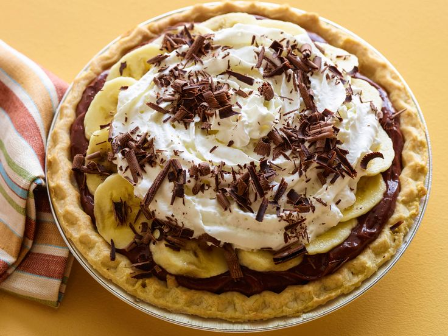

Chocolate banana pie

Ingredients
- 1 recipe pastry for a 9 inch single crust pie
- ¼ cup chopped pecans
- 1 (8 ounce) package cream cheese, softened
- 1 cup confectioners' sugar
- 1 cup heavy whipping cream
- ½ cup white sugar
- 2 large bananas, sliced
- 1 (3.9 ounce) package instant chocolate pudding mix
- ½ cup chopped pecans
Steps
- Preheat oven to 350 degrees F (175 degrees C).
- Knead together the pie dough and the 1/4 cup finely chopped pecans. Line 9-inch pie pan with the pecan dough; fill with heavy-duty foil and dried beans or pie weights. Bake for 20 minutes or until set and lightly browned (see Editor's Note). Let cool.
- Beat cream cheese and confectioners' sugar until smooth, and spread in the pie shell.
- Prepare chocolate pudding according to package instructions, but use 1/2 cup less milk. Set aside.
- Whip the cream with 1/2 cup sugar. Spread half of the whipped cream over the cream cheese in the shell. Lay sliced bananas on top of the whipped cream, and cover with the chocolate pie filling. Spread the other half of the whipped cream over the bananas. Sprinkle with chopped pecans, and refrigerate at least 3 hours or overnight before serving.
Back to main page